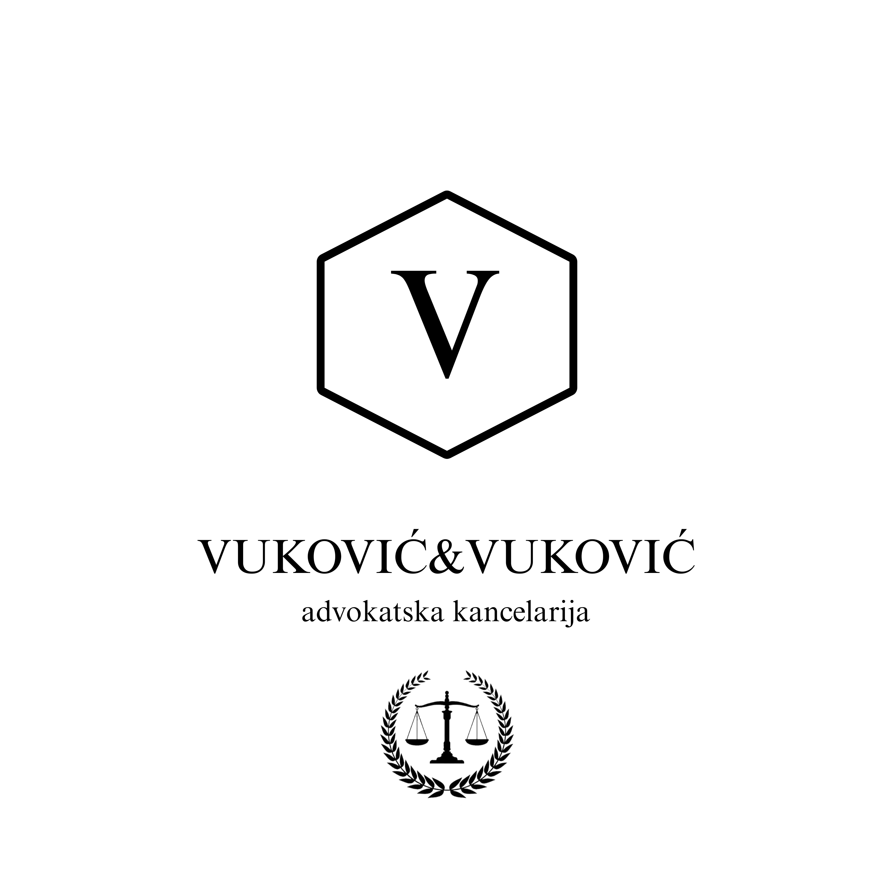

Kancelarija je osnovana 2000. godine i od svog početka pruža visok nivo predanosti klijentima. U raznovrsnim pravnim problemima pružamo kvalitetnu uslugu vodeći se načelima odgovornosti i savesnosti koja su u temelju tradicije poslovanja advokatske struke.
U svojoj ponudi pružamo širok izbor pravnih usluga, a saradnja sa strankama je od prioritetnog značaja. Tokom vođenja postupka u konstantnoj smo vezi sa klijentima pružajući im blagovremena obaveštenja o stanju njihovih predmeta.
Odnos klijent-advokat vodi se prvenstveno željama klijenta i pravnim smernicama advokata, a sve u cilju zaštite njegovih pravnih interesa. Kao pouzdan partner, svoj rad zasnivamo na integritetu, iskustvu i efikasnosti.
Vršimo pro bono usluge i sarađujemo sa brojnim institucijama i uglednim pravnicima.
Većina pitanja iz porodičnih sporova, kao i parničnih i vanparničnih postupaka, regulisana je Porodičnim zakonom. Ishod postupaka zavisi od okolnosti konkretnog slučaja. Za većinu pravnih problema preporučuje se angažovanje pravnog zastupnika koji vodi klijenta kroz postupak, zastupa njegove interese i pruža smernice kako da svoje zahteve postavi i uspešno brani.
Pitanja naslednopravnih odnosa i sporova regulisana su Zakonom o nasleđivanju. Za standardne postupke, bez sukoba u vezi sa pripadnošću naslednog dela, angažovanje advokata nije neophodno, jer sud ili javni beležnik regulišu sve formalnosti i obaveze.
Pitanja iz radnih odnosa i sporova regulisana su Zakonom o radu. Važno je da zaposleni i poslodavci poznaju svoja prava i obaveze predviđena zakonom i ugovorima. Svoja prava mogu ostvariti u radnom sporu, a pored toga mogu pokrenuti i upravni postupak kada je poslodavac državna, pokrajinska ili gradska institucija.
Ugovorni odnosi uglavnom se regulišu Zakonom o obligacionim odnosima. Poznavanje prava omogućava ugovornoj strani da neispunjene obaveze, nastalu štetu ili drugačije izvršenje nadomesti odgovarajućim zahtevom za ispunjenje, zamenu ili naknadu štete.
Česta pitanja uključuju način plaćanja advokatskih usluga: da li se radi na procenat, koliko koštaju konsultacije, pravni saveti, advokatska tarifa, cena tužbe, ugovora, zastupanja ili pro bono opcije.
Plaćanje se reguliše advokatskim tarifnikom, ali može biti predmet dogovora. Pro bono rad se primenjuje kod dugogodišnje saradnje ili kada složenost slučaja nalaže prilagođavanje usluga klijentu.
Telefon: +381642092029, +381641661188
Email: info@sasavukovic-law.rs
Adresa: Beograd, Srbija